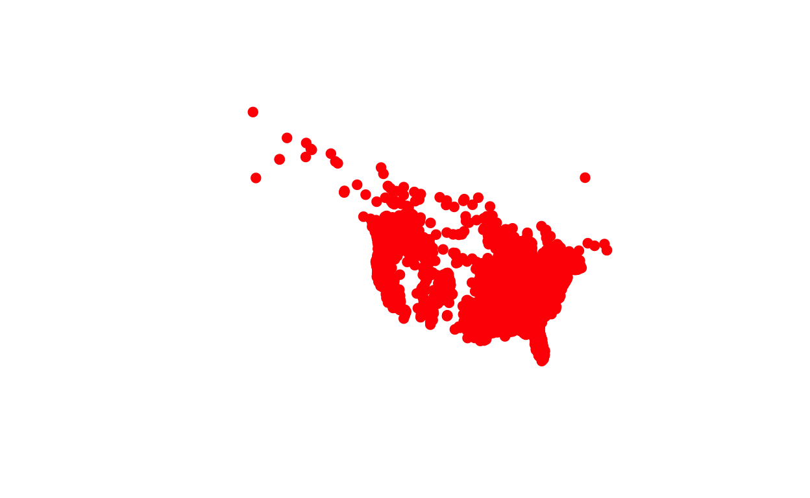

Before you start.
This week tutorial will be a bit playful, as you will focus on plotting the distribution of a crypto‐zoological species – the North American Sasquatch, or Bigfoot (Imaginus magnapedum). Supposedly, the sasquatch belongs to a large primate lineage descended from the extinct Asian species Gigantopithicus blacki. Sasquatch is regularly reported in forested lands of western North America and is considered a significant indigenous American and western North American folk legend. However, the existence of this creature has never been verified with a typed specimen.
The main objective will be to generate a spatial representation of
the complete range of the species. This type of analysis is the starting
point to build a statistical model to describe the ” environmental
requirements” of a species. These models are often referred to as
“species distribution modelling” (SDM) or “ecological niche modelling”
(ENM). Regardless of the “tongue-in-cheek” nature of the organisms
evaluated, this work will provide you with an opportunity to combine
different spatial data in R.
Lozier et al. (2009) undertook a similar task. They build an SDM to show the need for careful evaluation of database records before their use in modelling, especially when the presence of cryptic species (morphologically indistinguishable biological groups that are incapable of interbreeding) is suspected, or many records are based on indirect evidence.
Generating and visualising Spatial* objects to show
Bigfoot sightings.
Importing occurrence a data.frame into R is
easy. Transforming it into a Spatial* object is also easy.
However, collecting, georeferencing, and cross-checking coordinate data
is a tedious task. Discussions about species distribution modelling
often focus on comparing modelling methods. Still, if you are dealing
with species with few and uncertain records, your focus should be on
improving the quality of the occurrence data. All modelling methods do
better if your occurrence data is unbiased, free of errors, and if you
have a relatively large number of records.
In this case, you will have a file (usually a .txt or .csv file) with point locality data. Such datasets include the known distribution of a species and hopefully some extra metadata. Such a file can be stored locally in your drive or an on-line repository (e.g., GBIF, GITHUB, or hub.arcgis.com).
Loading and checking the data.
At this point, you should be able to load spatial data stored locally
and from online repositories. As a reminder, in R, loading
online-data is easy if you have the Uniform Resource Locator (URL)
determining the location of the data set, which can be used directly as
an argument into the functions read.table() or
read.csv().
Your task:
Run the code below to see how you can load data from an online repository
# The URL is data provided by the Bigfoot Field Research Organization and stored in hub.arcgis.com
Bigfoot.URL <- "https://opendata.arcgis.com/datasets/9947fc49e6c44120b4a1b3133c073dbc_0.csv"
# Load the CSV file using the read.csv() function,
Bigfoot.dta <- read.csv(Bigfoot.URL)
#Print the first six rows of Bigfoot.dta
head(Bigfoot.dta)First plot.
As you see from the printout on the last page (and below), there are many variables in this data set.
For now, you will focus on the positional information stored in the
columns X (or Lon) and Y (or
Lat). The first step to assess what this information is
showing is to display it using a scatter plot.
Your task: Using the data stored in the object
Bigfoot.dta in the memory you will: Plot a scatter-plot
showing the location (i.e., the Latitude [Y or
Lat] and Longitude [X or Lon]) of
each Bigfoot sighting.
# Plot the spatial set-up of the observations stored in Bigfoot.dta as red-filled circles.
plot(------- [, c("-----","------")], # Specify the object with the position information
pch = 19, # Define the type of point to plot.
col = "---" # Define colour of the points [make these red].
)plot(mtcars [, c("mpg","wt")], # Specify the object with the information c
pch = 1, # Define the type of point to plot.
col = "black" # Define colour of the points.
)Maping the Area of intertest.
This first visualisation provides a reasonable frame of reference,
but it would be better to include the shape of continental North America
for reference purposes. Many such pre-loaded maps are part of
R packages (e.g.maptools, maps,
rworldmap, ggplot2). Here, you will use the
NoAmPoly data set I have prepared for you (it is loaded in
the memeory). The object is a SpatialPolygonsDataFrame with
multiple attributes associated to each of the Poligons
bounded together.
Your task:
Explore and Plot the data in the NoAmPoly object.
# use the function summary() to explore the information stored in the object
--------(------)# Print the variable names using names()
--------(------)# Look at the first five rows of the Data matrix stored in NoAmPoly using head()
--------(------)# Check what type of object is NoAmPoly using class()
--------(------)# plot NoAmPoly using plot
--------(------)Ploting North America and Bigfoot data together
The summary of NoAmPoly shows multiple features, one per
country. When NoAmPoly is plotted over
Bigfoot.dta it provides spatial context to Bigfoot
sightings.
Your task:
Plot the location (i.e., the Latitude [Y or
Lat] and Longitude [X or Lon]) of
each Bigfoot sighting OVER the reference map with only
North American countries.
# Plot Bigfoot sightings as red-filled circles.
plot(--------[, c("----", "-----")] , # Define the object to plot.
pch = --, # Define the marks are filled circles.
col = "---" # Define the colour of the marks
)
# add the Reference map - only North American countries.
plot(---- , # Define the SpatialPolygonsDataFrame to plot.
add = -- # Should the Geometry be added to the current plot?
)Geographic transformations for polygons.
Like many other maps, the maps you have plotted so far represent a distorted view of the space. Why is that?, because the Mercator projection (the one used most often when the information is measured in Latitude and longitude) make areas near to the Earth’s polar regions (Greenland, Alaska and Antarctica, for example) look much larger than they are relative to areas nearer to the equator. This is because Mercator’s way of flattening the globe involves stretching the far northern and far southern parts of the world out until a flat, rectangular map is achieved.
The question is how to pick the “right” way to represent the area of interest. There is no clear-cut answer to this, as it depends on the mapping exercise objective. For example, do you want to focus on a small area or an entire continent?. Lucky for you, mapping agencies everywhere have often already flagged a reasonable projection for whatever region/country you are interested in, so your first step is to look for that with a quick Internet search.
A version of Albers Equal Area projection is optimised for North America’s characteristics (wider east to west than north to south extents) for the study region. If South America were the focal region, you would need a different projection optimised to represent an area larger north to south than broader east to west.
With this information, you can look for the PROJ string in either the
PRøj https://proj.org/ or
Spatial Reference https://spatialreference.org/ websites and re-project
your North America map using the spTransform() function
from the sp package.
Your task:
You will now use the spTransform() function from the
sp package to re-project the NoAmPoly the
world map to an Albers Equal Area projection for North America.
Once re-projected, plot the resulting
SpatialPolygonsDataFrame to assess how the visualisation of
NoAmPoly changed.
# Define the modified Albers Equal Area projection for North America.
# You can see it it here <<https://epsg.io/102008>>
CRS.String <- "---------"
# Using the spTransform function to change the projection.
wrld.AEA <- -----(x = -----, # The object to "re-project".
CRSobj = -----(-----) # the new projection as a CRS object.
)
# Plot the re-projected map.
-----(-----)# some data to do the transfomrtion
data(meuse)
coordinates(meuse) <- c("x", "y")
proj4string(meuse) <- CRS("+init=epsg:28992")
# transfomr th data
meuse.utm <- spTransform(meuse, CRS("+proj=utm +zone=32 +datum=WGS84"))Create a spatial object.
The base map is now perfect to represent the area of interest so that
distances and areas are accurately represented. But what about
the observations? These are still in Latitude and Longitude
(only georeferenced). Also, it is still a data.frame and
not a Spatial* object.
Your task:
Using the function coordiates() create a
SpatialPointDataFrame based on the information in
Bigfoot.dta.
Here you will use two variables (Lon and
Lat) in Bigfoot.dta to define the spatial
information.
Once you are done creating this SpatialPointDataFrame,
print its’ summary.
# Copy the data.frame to another object so the original information is available after the object transformation
Bigfoot.SpaPnt <- --------
# Use the coordinates function to transform Bigfoot.SpaPnt from a data.frame to a SpatialPointDataFrame
-----(--------) <- ~ --- + --- # note that the transformation to a SpatialPointDataFrame is done by defining a formula were the coordinates are the predictors.
# What is the class of the object after using coordinates?
------(------)
# Plot the SpatialPointDataFrame..
-----(-------,
pch = 19, # Define the marks are filled circles.
col = "red" # Define the colour of the marks
)# some data to do the transfomrtion
data(meuse)
coordinates(meuse) <- c("x", "y")You could also do the operation above by creating a
SpatialPoints object and merging a data.frame to it, or
using the SpatialPointDataFrame() function. The code below
shows how this is done.
Bigfoot.Pnt <- SpatialPointsDataFrame(coords = Bigfoot.dta[, c("Lon", "Lat")] ,# Define the coordinates for each observation
proj4string = CRS("+proj=longlat +datum=WGS84"), # Define the projection - It should be WGS84 as you have Lat/long Info.
data = Bigfoot.dta # Define the data.frame to be appended.
)
# Plot the SpatialPointDataFrame..
plot(Bigfoot.Pnt,
pch = 19, # Define the marks are filled circles.
col = "red" # Define the colour of the marks
)
Projecting Bigfoot data - Projectiong spatial points
Once you have this SpatialPointDataFrame, plotting it
would produce a very similar map to the one created with
Bigfoot.dta, but without the coordinates and “stretched”
east-to-west. This is what you need to
Your goal now is to re-project the sightings points to the “best”
projection for the region of interest. Like before, this is using the
spTransform() function from the sp package.
But before you do this, check the Bigfoot.SpaPnt projection
using the proj4string() function. For this just run the
code below and ignore the warning.
## Warning in proj4string(Bigfoot.SpaPnt): CRS object has comment, which is lost in output; in tests, see
## https://cran.r-project.org/web/packages/sp/vignettes/CRS_warnings.html## [1] "+proj=longlat +datum=WGS84 +no_defs"Now that you know the map is in geographical coordinates, Project it
to an Albers Equal Area projection. One thing before we move on, if
there was no coordinate system in the object (the case if the object is
created using coordinates()) you would need to add a
initial projection manually.
Your task:
Use the function spTransform() to re-project
Bigfoot.SpaPnt to an Albers Equal Area projection.
# Re-project the first SpatialPointsDataFrame (Bigfoot.SpaPnt) using the function `spTransform()` and the projection in CRS.String
Bigfoot.SpaPnt.AEA <- spTransform(x = --------- , # Define the object to (re)projected.
CRSobj = -----(-------) # Define the projection to be used.
)
# Print the new projection
------------(-------)spTransform(x = ShapeFileObject
CRSobj = CRS(CRS.String))A better map.
With that last step, you are ready to generate a nicer looking map of the region of interest and the recorded Bigfoot sightings.
Your task:
Run the code below to plot your projected Bigfoot sightings object
(Bigfoot.SpaPnt) OVER your projected map
of North American counties (NoAmPoly.AEA).
## Define the plotting space [see ?par so check what xaxs = "i" and yaxs = "i" do]
par(mar = c(2, 2, 6, 2),
xaxs = "i", yaxs = "i")
# Plot the Area of interest making the continents light-grey, the boundaries black, and the oceans light-blue.
plot(------ , # Define the SpatialPolygonsDataFrame to plot - projected North America
col = '------', # make the continental areas light-grey
bg = '------', # Make the oceans blue
xlim = range(------), # Set limits to zoom into the region with points
ylim = range(------), # Set limits to zoom into the region with points
main = "Bigfoot sigthings\n[1869 to 2017]" ,
cex.main = 1.2)
# Add a bounding box, some tick marks to define the latitude-longitude point
box(); axis(1, labels = NA); axis(2, labels = NA); axis(3, labels = NA); axis(4, labels = NA)
# Note that the commands above are separated with a semicolon (;) as this allows to put consecutive functions in one line.
# Plot Bigfoot sightings as a red-filled points
points(------, # Define the SpatialPointsDataFrame to plot - Projected Big foot obs
pch = ------, # Define the mark shape.
col = "------", # Define the mark colour - make it red.
cex=0.7 # Define the size of the dots.
)This map is clearly better than that first raw visualization!!!
Last Points.
The work you have done today is the type of work you would do in an actual project. You have explored your observations and predictors, then matched these two together, and finally generated a model to test a hypothesis and make some predictions.